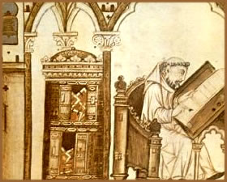
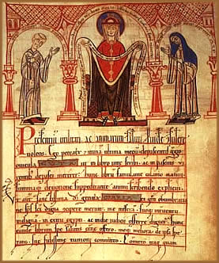
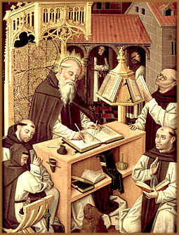

A produção,
confecção e circulação dos livros
medievais eram sempre cercadas por múltiplos obstáculos
que lhes tornavam difícil o acesso. O primeiro e principal
obstáculo era de ordem econômica. O livro custava
caro.
Um livro requeria
grande quantidade de pergaminho (de acordo com o formato, obtinha-se
de dez a dezesseis folhas por pele) e o pergaminho era um material
oneroso. A difusão do papel chiffon, ocorrida na Espanha
desde o século XII, na França no XIII, permitiu
baixar o preço. Mas é somente no século XIV
e, sobretudo, no XV que o uso do papel se difundiu largamente
no domínio do livro manuscrito.
Com igual superfície,
calculando-se a partir de documentos franceses, o papel podia
tornar-se cinco vezes mais barato que o pergaminho no século
XIV e até treze vezes mais barato no século XV,
graças ao aprimoramento das técnicas de papelaria
e à multiplicação das oficinas de papel.
Mas em outros lugares, especialmente na Alemanha, a diferença
foi menor. De qualquer modo, o ganho sobre o preço total
do livro permanecia relativamente limitado, na ordem de 10 a 20%,
somente em relação às obras em pergaminho.
A relativa
modéstia desse ganho permitiu a esse tipo de livro guardar
uma posição suficientemente sólida, visto
que muitos letrados parecem ter tido um preconceito desfavorável
contra o livro de papel, julgado, ao mesmo tempo, menos nobre
e menos sólido, sobretudo para os textos importantes e
para obras pelas quais o dono se apegava, desejando transmiti-las
aos descendentes.
O
fator principal do elevado preço era o custo da cópia.
Os bons copistas eram raros. No final da Idade Média, os
"scriptoria" monásticos haviam perdido o essencial
de sua importância e a maior parte dos escribas seria artesãos
profissionais que se encontravam principalmente em grandes cidades,
nas capitais da nobreza e as cidades universitárias.
Mesmo deixando
de lado o caso dos livros de luxo ornados de miniaturas, verdadeiras
obras de arte destinadas aos grandes senhores e aos reis, a confecção
de livros tomava tempo. Os bons copistas trabalhavam lentamente
(por volta de duas folhas e meia por dia). Em um ano, um bom copista
produzia apenas cinco livros de duzentas folhas.
Nas cidades
universitárias, onde mestres e estudantes tinham necessidade
de muitos livros, mas dispunham de limitados recursos financeiros,
procurou-se reduzir a um mínimo o preço de revenda
dos livros: pequenos formatos, linhas apertadas, escritas mais
cursivas, multiplicação das abreviaturas permitiam
economizar o pergaminho ou o papel, sempre ganhando um pouco de
tempo de cópia.
Acredita-se
que muitos estudantes e mestres escolheram uma solução
bem menos onerosa (que não garantia a correção
dos textos transcritos) que consistia em encomendar a qualquer
copista "amador" (um capelão necessitado ou um
estudante pobre). Supõe-se que
os mais caros, geralmente as grandes Bíblias ou
os volumes glosados dos Corpus Iuris Civilis ou do Corpus
Iuris Canonici, custavam uma dezena de libras de Tours (unidade
de medida francesa). Mas existiam inúmeros pequenos volumes
sob a forma de simples cadernos soltos, nos quais se anexavam
"anotações" de cursos; apontamentos de
questões disputadas, de sermões, de breves tratados
práticos etc., que eram vendidos por algumas poucas moedas.
O mercado de
livros de segunda mão era muito ativo, especialmente nas
cidades universitárias onde era alimentado pelas obras
colocadas à venda por estudantes em necessidade ou deixando
a universidade. Em Paris, por volta de 1400, o "preço
médio" de um livro correspondia aproximadamente a
sete dias de "salário e pensão" de um
notário ou secretário do rei (que eram no final
da Idade Média, equivalente aos conselheiros do Parlamento
e os professores da universidade).
A mais importante
das bibliotecas privadas parisienses, do escrivão do parlamento
Nicolas de Baye, em 1419, permanecia bem abaixo dessa cifra teórica,
com 198 volumes dos quais uma parte foi adquirida por doação
ou herança. No caso da França, os únicos
a possuírem uma biblioteca de alguma importância
eram os príncipes de sangue e os grandes senhores, os homens
de saber. Para além delas, uma pequena e média nobreza,
mercadores, baixo clero, os livros eram praticamente ausentes.
Entre os próprios
homens de saber, as coleções de livros possuíam
importância variável. A biblioteca de um estudante,
ainda que abastado, não ultrapassava, em média,
uma dúzia de volumes: os livros de estudos fundamentais,
de um lado, uma ou duas coleções de textos religiosos,
de outro. Seus professores, que tinham necessidade de uma pequena
biblioteca pessoal para preparar seus cursos, eram um pouco melhor
aquinhoados e possuíam um determinado número de
comentários e tratados modernos; isso representava, no
mínimo, cerca de trinta livros. Contudo, alguns mestres,
mais ricos ou de espírito mais curioso, possuíam
bibliotecas que alcançavam ou até ultrapassavam
uma centena de volumes. Foi igualmente com essa cifra média
de uma centena de volumes que se organizaram as bibliotecas de
homens do Parlamento de Paris por volta de 1400.
A dimensão
média das bibliotecas teria aumentado do século
XIV para o XV. A produção de livros novos tinha
diminuído sensivelmente na França, entre 1350 e
1450, em virtude da crise econômica geral do período
e pode-se entender que era uma tendência comum a toda a
Europa ocidental. A existência de um ativo mercado de segunda
mão e a cuidadosa conservação dos manuscritos
antigos, permitiam às coleções aumentarem
pelo simples efeito da acumulação. Entretanto, o
crescimento não foi considerável.
Os proprietários
de bibliotecas consideravam-nas verdadeiros tesouros e as tratavam
com o maior cuidado. O valor de um livro era simbólico
e material. Cuidadosamente conservados dentro de um cofre ou armário,
os livros proclamavam a ciência de seu proprietário.
Freqüentemente adquiridos junto a livrarias de universidades,
por vezes despachados com altos custos de Paris ou de Bolonha,
os livros eram indissoluvelmente ligados aos estudos e aos diplomas.
Toda biblioteca de alguma importância possuía um
alto valor de mercado. Ela representava uma forma de entesouramento,
um capital tanto intelectual quanto financeiro que se pretendia
legar aos seus herdeiros, se eles empreendessem seus próprios
estudos, fosse num colégio, fossem em alguma igreja.
Existiam
três tipos de bibliotecas. Primeiramente, as bibliotecas
principescas. Na altura da morte do rei da França Carlos
V (1380), sua "livraria" do Louvre contava com pouco
menos de 1300 volumes; no século XV, o duque de Bourgogne
Filipe, "O Bom" teria tido uma biblioteca com cerca
de 880 livros. Por seu turno, os papas de Avignon enriqueceram
sem cessar suas coleções de livros. Eles possuíam
mais de dois mil quando morreu Urbano V, de acordo com um inventário
de 1369. Seu catálogo preciso deixa supor que pelo menos
os familiares do soberano, seus visitantes distintos e seus conselheiros
políticos tinham acesso às bibliotecas.
Em seguida havia
as bibliotecas das catedrais, dos mosteiros e dos conventos. Tratava-se,
em geral, de antigas coleções que, excetuando-se
as dos religiosos mendicantes, não foram especialmente
enriquecidas no final da Idade Média, mas haviam sido extremamente
importantes (mais de 300 volumes em Notre-Dame de Paris em finais
do século XV, 486 na catedral de Reims em 1462, e mais
ainda nos mosteiros: por volta de 1450-1460, havia cerca de 1600
volumes em Saint-Denis ou em Claraval na França, 1100 em
Monte Cassino na Itália, 800 em Melk na Áustria,
etc). De resto, tais bibliotecas eclesiásticas eram ricas
em textos religiosos e em livros litúrgicos que não
eram necessariamente úteis para os homens de saber.
As bibliotecas
mais "modernas" eram as dos conventos mendicantes, cujos
estudantes, leitores conventuais e pregadores, compartilhavam
do espaço, sobretudo, no caso dos colégios e universidades.
Os principais colégios universitários tinham uma
biblioteca cujo núcleo era geralmente constituído
pela própria biblioteca do fundador, que vinham completar
as doações posteriores. Era assim que o colégio
da Sorbonne possuiria, desde 1338, uma biblioteca de 1772 volumes
que a tornavam então, sem dúvida, a mais bela da
França; o colégio de Navarra em Paris e o de Foix
em Toulouse deviam, os dois juntos, abrigar cerca de 800 volumes
por volta de 1500.
Os outros colégios
possuíam coleções muito mais modestas, mas
por vezes, preciosas: cerca de 200 livros no colégio d'Autun
em Paris (1462), 150 no colégio d'Annecy em Avignon (1435),
78 no colégio de Pélegry em Cahors (1395), etc.
Os colégios ingleses parecem oferecer cifras da mesma ordem
(...). Uma das mais célebres bibliotecas de colégio
foi, no final da Idade Média, a do Collegium Amplonianum
de Erfurt, que recebeu em 1433, de seu fundador, o antigo
reitor Amplonius Ratingk, uma extraordinária coleção
de 637 livros, rica em clássicos, o que representou uma
das vias de ingresso do humanismo na Alemanha. No conjunto as
bibliotecas dos colégios continham livros de estudos, destacando-se
as disciplinas tradicionalmente ensinadas nas universidades.
Mas os estatutos
não parecem indicar que os visitantes externos tenham sido
acolhidos com muita facilidade nas bibliotecas de colégios.
O mesmo acontecia com as bibliotecas de universidades, as quais
eram, aliás, freqüentemente, muito menos importantes
e que praticamente não existiam antes do século
XV. É provável que, no exercício cotidiano
de suas atividades profissionais ou administrativas, o conjunto
dos homens de saber, sobretudo os leigos — fossem médicos,
advogados, procuradores, juízes ou oficiais do rei —,
deveria, antes de tudo, contar com os recursos de sua pequena
livraria pessoal e de sua memória, eventualmente auxiliada
por aqueles pequenos cadernos e anotações pessoais
que alguns pedagogos os aconselhavam a começar a compor
desde o tempo de seus estudos, sugerindo ainda que os mantivessem
sempre à mão.
Surgimento
da Tipografia
Do Manuscrito
a invenção da tipografia, que transformou completamente,
tanto em rapidez quanto em quantidade, a circulação
da informação escrita no seio da sociedade, foi
realmente uma das revoluções técnicas mais
importantes da história da humanidade.
A difusão
da tipografia foi relativamente lenta. Os primeiros livros impressos
dos quais foram conservados alguns exemplares — a "Bíblia
de 42 linhas", dita de Gutenberg, o Saltério de Mayence
— datam dos anos 1450. Tratava-se então de uma técnica
essencialmente germânica, implantada em Mayence, Colônia,
Estrasburgo, Bâle. Além disso, durante uma geração
ainda, através de toda a Europa, os impressores serão
na grande maioria os alemães. Foi apenas em 1470 que eles
começaram a emigrar para além de suas fronteiras.
Nessa época, apenas cinco ou seis tipografias funcionavam
fora da Alemanha, sendo que as únicas que prometiam um
certo futuro eram as de Veneza, onde Jean de Spire se estabeleceu
em 1469, e de Paris, onde Ulrich Gering de Constance e dois companheiros
vieram instalar, em 1470, sua oficina próxima da Sorbonne.
O decênio
1471-1480 viu a imprensa se multiplicar na Alemanha (em 26 localidades
novas, tomando conta também da Suíça e dos
Países Baixos), mas principalmente na Itália (44
localidades novas). Em compensação, a França,
com sete implantações em Albi, Angers, Caen, Lyon,
Poitiers, Toulouse e Viena, a Península Ibérica
(oito implantações) e, de maneira surpreendente,
a Inglaterra (apenas quatro implantações: Londres,
Westmister, St Alban's, Oxford) ainda não haviam entrado
no movimento.
Avaliados pelos
historiadores em cerca de 27.000 edições antes de
1500, correspondendo a mais de dez milhões de livros, tal
produção provinha, ao menos em quatro quintos, da
Itália (44%) e da Alemanha (35%); em seguida, vinham 15%
de edições francesas, e os outros países
da Europa simplesmente repartiam os 5% restantes. Se, no total,
cerca de 240 localidades européias haviam visto, em 1500,
funcionar uma prensa de imprimir, o mapa da tipografia apresentava
ainda lacunas espantosas. Entre uma e outra, havia, evidentemente,
alguns desníveis. A aparição da tipografia
não terminou de uma vez com as atividades dos copistas
de manuscritos; mesmo que a produção destes tenha
sofrido inflexões por toda parte e mais claramente após
1470, continuou-se a transcrever livros manuscritos até
o início do século XVI.
Os
manuscritos mais antigos continuavam a ser utilizados e a circular.
Aqueles que possuíam belas coleções tinham
tendência a conservá-los e não substituí-los,
a não ser progressivamente, pelos livros impressos. Estes,
de fato, custavam menos, mas não se pode esquecer que os
primeiros livros impressos tiveram modestas tiragens, por vezes
da ordem de cem exemplares, e não eram então necessariamente
tão bem comercializados e nem muito acessíveis.
Os estudos
apontam que, por volta de 1480, a parte da impressão nas
"bibliotecas do saber" francesas não passava
dos 6% e que foi apenas por volta de 1500 que ela passou para
mais de 50%. A evolução parece ter sido a mesma
por todo lado, anterior em dez ou quinze anos na Itália,
mais lenta ainda na Inglaterra. Efetivamente, como se tem observado
há tempos, os textos impressos do século XV foram,
em sua grande maioria, os textos "medievais" cujo mercado
parecia assegurado. Mas não eram necessariamente esses
os que tinham a preferência das bibliotecas eruditas. Em
primeiro lugar, encontram-se livros religiosos, que constituem
quase a metade da produção incunábula: tratava-se,
por um lado, de Bíblias, por outro, de livros litúrgicos
(missais, breviários, livros de horas), enfim, tratados
de espiritualidade, livros de devoção, vidas de
santos, etc., em latim ou em língua vulgar. Outra categoria
bem provida: a gramática; porém tratava-se de obras
elementares (o Donato, o Doctrinale de Alexandre de Ville-Dieu,
os Dísticos de Catão, etc.) que eram dirigidos tanto
aos alunos das escolas primárias quanto aos estudantes
da faculdade de artes; eles puderam servir para a melhoria dos
ensinamentos de base, não para a renovação
cultural das elites. Vinha finalmente a literatura profana, geralmente
em língua vernácula: enciclopédias e florilégios,
crônicas, versões mais ou menos modernizadas das
canções de gesta ou dos romances corteses, para
uso, sem dúvida, de um público aristocrático,
que se aproximavam com obras decididamente populares, do gênero
dos almanaques e outros "calendários dos pastores".
Os textos eruditos,
dos quais existiam nas cidades universitárias, centenas
de manuscritos, não tiveram as honras da impressão,
a não ser tardiamente. Nem as Sentenças de Pedro
Lombardo, nem os grandes doutores da escolástica, de Tomás
de Aquino e Alberto Magno, até Gerson, foram impressos
em Paris antes de 1500. Poder-se-ia dizer o mesmo de Aristóteles
ou dos Corpus e comentários de direito romano e canônico.
Os textos jurídicos, que ocupavam um tal lugar nas bibliotecas
eruditas da Idade Média, praticamente não representam
mais de 10% das edições. Ou seja, foram os textos
propriamente humanistas, (clássicos latinos e, cada vez
mais, os gregos) e as obras de autores italianos recentes que
teriam sido os livros impressos mais procurados pelos letrados,
inclusive na França ou na Inglaterra, porque precisamente
os manuscritos lá eram raros.
É possível
concluir que, desde os primeiros decênios de sua existência,
a imprensa alargou consideravelmente o público da cultura
escrita. Os meios populares, pelo menos urbanos, não se
conservariam mais à parte do mundo do livro; os oficiais
subalternos (sargentos, notários, etc.), os simples vigários
tiveram, dali por diante, a possibilidade de constituir para si
próprios um embrião de biblioteca, ainda que fosse
com apenas uma dezena de volumes. Vê-se, por toda parte,
entre 1480 e 1530, multiplicarem-se essas "bibliotecas mínimas",
de acordo com a expressão de Pierre Aquilon. Além
disso, a tipografia certamente permitiu um efetivo progresso cultural
nos meios aristocráticos. A isso deve-se evidentemente
aliar o novo impulso então proporcionado às grandes
bibliotecas principescas. Mas, no que concerne aos homens de saber,
colocando-se à parte, sem dúvida, uma elite de humanistas,
geralmente italianos estimulados por novas idéias e sempre
curiosos de novos textos, não se percebe em que medida,
antes de 1500, os progressos do livro impresso modificaram as
proporções ou a composição das bibliotecas.